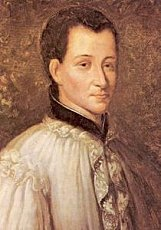
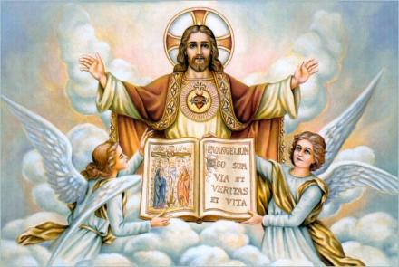
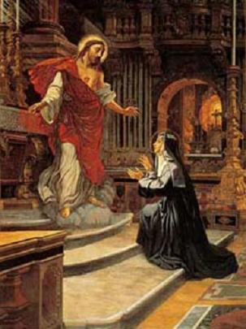
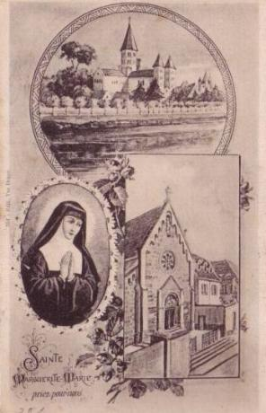
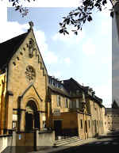
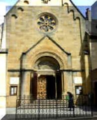

No começo do ano 1675,
o Reverendo Padre da Colombière, chegou a Paray, como Superior da 
A primeira vez que o Padre da Colombière visitou a Comunidade Religiosa, Irmã Margarida Maria entendeu em seu íntimo as palavras de JESUS. "Eis aquele que EU lhe envio". Pouco tempo depois, o Padre estava vindo atender as confissões de todas as Irmãs no Mosteiro e embora a Irmã Alacoque não se fizesse conhecida, ou seja, não lhe revelasse as Aparições, ele a reteve por um longo tempo, aproximadamente uma hora e meia e lhe falou como se ele tivesse compreendido o que se passou com ela. Mas, sempre humilde e reservada, ela se retirou, sem lhe ter feito alguma abertura sobre as visitas extraordinárias que recebeu de DEUS. O Padre lhe tinha pedido se ela concordaria que ele viesse outro dia conversar naquele lugar, ela respondeu que não seria por ela, mas ia fazer o que a obediência lhe ordenasse.
Passado o tempo, o Padre Superior foi convidado a fazer uma conferência espiritual na Comunidade Religiosa. Ele observou o posicionamento da Irmã Margarida Maria entre todas as outras. Depois do sermão, ele reservadamente perguntou a Madre de Saumaise, quem era aquela jovem religiosa que estava naquele lugar que ele mostrou. A Madre tendo respondido o nome da Irmã Margarida, "ele lhe assegurou que ela era uma alma repleta de graças". A Madre de Saumaise na continuidade pediu ao Padre para voltar ao Mosteiro e inclusive, ordenou a Irmã Margarida que fosse conversar com ele.
A Santa relatou assim as suas disposições nesta circunstância: "Eu não deixei de sentir uma horrorosa repugnância quando era necessário ir conversar com o Padre. Aliás, foi o que eu lhe disse desde o início. Mas ele me respondeu que estava alegre pelo fato dela ter feito este sacrifício por amor a DEUS. E então, fui direta ao assunto, abrindo-lhe o meu coração e lhe revelando o interior de minha alma. Ele ouviu em silêncio e depois me deu três consolações, me assegurando que ele não tinha nada a temer na condução do espírito dela, tanto que ele não me retirava da obediência. Que eu devia seguir naturalmente os movimentos de meu espírito, lhe abandonando todo o meu ser, para me sacrificar e imolar, conforme a vontade dele. Admirou a imensa bondade de nosso DEUS e me preparou para acolher com mais estima os dons de DEUS e receber com respeito e humildade, as frequentes comunicações e as familiares conversações, que ELE me gratificava. Por isso, eu deveria estar em continua ação de graças, num profundo agradecimento, para com tão grande bondade do SENHOR"

O Padre da Colombière não se contentou em tranquilizar a nossa Santa. Ele não deixou de tranquilizar também a Madre de Saumaise, de modo que, por uma ou pela outra, o apoio de sua experiência foi um auxélio todo providencial, num momento particularmente crítico para as duas.
Mas estava escrito que a discípula do CORAÇÃO DE JESUS não gostaria jamais de consolação que não estivesse no trajeto da Cruz. Esta é a mais importante e longa comunicação com a nova Superiora, aquela que substituiu Madre de Saumaise, mas que na verdade começou também derramando sobre Margarida outras humilhações e abomináveis provações.
Um dia que o Padre veio celebrar a Santa Missa na Igreja do Mosteiro, NOSSO SENHOR concedeu três graças a ele e a Irmã Margarida Maria ao mesmo tempo. No momento em que ela se aproximou para receber a Sagrada Comunhão, JESUS lhe mostrou o Seu DIVINO CORAÇÃO como se fosse uma ardente fornalha. Dentro apareceram também dois outros corações (de Margarida e do Padre) que iam se unir e penetrar no abismo deste CORAÇÃO SAGRADO. ELE disse: "É assim que Meu puro Amor une estes três corações para sempre".
NOSSO SENHOR fez compreender que Margarida deveria revelar ao Padre os tesouros de Seu Adorável CORAÇÃO, "de forma que ele O conhecendo divulgasse o valor, a grandeza e sua utilidade". Para a Irmã, JESUS disse uma palavra de simplicidade maravilhosa: "EU gostaria que nós fundássemos nossos corações, como irmão e irmã, igualmente partilhando dos bens espirituais". Mas, na sua modástia e imensa humildade ela não entendeu a palavra do SENHOR, se preocupando com a verdadeira desigualdade infinita que existe "entre um HOMEM de uma tão grande virtude e Santidade e uma pobre e insignificante pecadora como eu". NOSSO SENHOR se incumbiu de esclarecer dizendo: "As riquezas infinitas de Meu CORAÇÃO superarão e igualarão tudo. Nada tens a temer".
Depois deste acontecimento, logo na primeira vez que ela viu o Padre, lhe descreveu todas as manifestações sobrenaturais.
"A maneira humilde e o efeito da graça nele, quando recebeu aquelas informações sobre o SAGRADO CORAÇÃO, e verias outros fatos que eu lhe disse da parte de Meu Soberano Mestre, e que concernia a ele, me tocou profundamente e me beneficiou mais do que muitos sermões que eu poderia ter ouvido" , falou a Irmã.
Da mesma maneira que a alma de Margarida, a do Padre da Colombière também estava pronta! Agora é chegada a hora da última das Grandes Revelações. O Santo Jesuíta ia receber a sua parte da herança do SAGRADO CORAÇÃO. É de joelhos que humildemente ele concordou em escutar a narração desta magnífica aparição do CORAÇÃO DE JESUS a sua serva. O fato pertence à história. Eis chegado o anúncio de uma nova era na Igreja de DEUS.
A REVELAÇÃO
Em 1675, a Festa do CORPO DE
DEUS caiu numa quinta-feira no dia 13 de Junho. Naturalmente a oitava 
Escreveu a Santa: "No oitavo dia da Festa eu estava diante do SANTÍSSIMO SACRAMENTO e recebi de Meu DEUS graças excessivas e extraordinárias de Seu Amor, e me senti tocada pelo desejo do retorno, de lhe restituir amor por amor. ELE me disse":
"Você não pode ME dar um maior prazer do que fazendo isto que EU tenho já tantas vezes pedido, o retorno de amor da humanidade". "E descobrindo o Seu DIVINO CORAÇÃO me mostrou":
"Eis o CORAÇÃO que tanto ama a humanidade, que nada poupa até se exaurir e se consumir como demonstração de Amor. Por reconhecimento, EU não recebo da maior parte das pessoas, senão ingratidáes, irreverências, sacrilégios, frieza e desprezo que tem por MIM neste Sacramento de Amor. Mas, o que me deixa mais sensível e triste são os procedimentos dos corações que ME são consagrados! É por isto que EU lhe peço que a Primeira Sexta-Feira após a oitava do SANTÍSSIMO SACRAMENTO (ou seja, oito dias após a Festa do CORPO DE CRISTO) , seja dedicada uma Festa Especial em honra do MEU SAGRADO CORAÇÃO (instituição da FESTA EM HONRA DO SAGRADO CORAÇÃO DE JESUS). Neste dia, deverão se preparar e comungar, para fazer uma honrosa reparação ao Meu CORAÇÃO, pedindo perdáo por todas as indignidades cometidas contra ELE, inclusive aquelas praticadas durante a exposição do SANTÍSSIMO SACRAMENTO nos altares das Igrejas. EU prometo que o Meu CORAÇÃO derramará em quantidade as Suas Graças sobre todos aqueles que LHE renderem esta homenagem procurando honrar o Meu Divino Amor".
"E respondendo, porque eu não sabia como ia realizar aquilo que ELE desejava de mim? ELE me disse que enviaria o seu servo (Padre da Colombière) que ELE me tinha apresentado, para a realização deste desígnio", falou a Irmã. "E tendo feito isto, ELE me ordenou colocar tudo por escrito, o principal assunto referente ao SAGRADO CORAÇÃO DE JESUS CRISTO, além de verias outras coisas relacionadas com a glória de DEUS".
Irmã Margarida Maria escreveu e entregou ao Padre o texto completo da sua visão. A seguir, transcrevemos o diélogo admirável entre o SAGRADO CORAÇÃO DE JESUS e sua bem-aventurada discípula, quando ELE lhe deu a ordem para que ela escrevesse e entregasse o texto ao Padre da Colombière:
"Mas, Meu SENHOR", disse ela , "o SENHOR Se dirigiu logo a mim, a uma tão mesquinha e pobre pecadora, que de tão indigna será capaz de impedir a realização de Vosso desígnio. O SENHOR possui tantas almas generosas para executar esta admirável missão".
"Pois bem! Pobre inocente que você é não sabe que EU Me sirvo dos mais fracos para confundir os fortes? Ordinariamente, são nos menores e mais pobres de espírito que EU coloco o Meu Poder com mais brilho, a fim de que eles não se atribuam a si mesmo nada das coisas que EU realizo".
"Tudo bem, meu DEUS", ela falou, "me dá o meio de poder fazer o que o SENHOR ordena".
"Desde então" , falou JESUS, "descreva tudo ao meu servidor Padre da Colombière e lhe diz, de Minha parte, para ele fazer todo o possível a fim de estabelecer esta Devoção, que irá dar imenso prazer ao Meu DIVINO CORAÇÃO. Que ele não tenha receios e nem temores em face das dificuldades que encontrará, porque EU não faltarei, estarei sempre presente para ajudá-lo a ultrapassar todos os obstáculos".
O Padre da Colombière não era homem que acreditava imediatamente, em todas as coisas que lhe diziam. Mas no caso presente, ele estava sob os olhos mais brilhantes que testemunhavam as inalteráveis virtudes da Irmã Margarida Maria, e por isso, não tinha a temer a menor ilusão nas palavras que ela lhe transmitiu. Humildemente reconhecido e santamente feliz pelo Ministério que o SAGRADO CORAÇÃO DE NOSSO SENHOR JESUS CRISTO lhe reservou, quis começar por estabelecer sobre ele mesmo o reinado do CORAÇÃO SAGRADO. Ele se dedicou e se Consagrou ao SAGRADO CORAÇÃO DE JESUS, com toda a energia e amor de sua alma, desde o dia 21 de Junho de 1675, sexta-feira, oitavo dia depois da Festa do CORPO DE CRISTO.
Do interior do Mosteiro, a serva de DEUS se unia sem dávida ao ato solenemente íntimo executado pelo seu Diretor Espiritual. Dessa forma o SAGRADO CORAÇÃO DE JESUS pode olhar aqueles dois corações como as duas primeiras conquistas, em ordem das revelações de Paray-le-Monial.
Após as confissões de nossa Santa, o Padre da Colombière não deixou de continuar sendo o seu auxélio, "durante o pouco tempo que permaneceu nesta cidade e mesmo depois, estando distante. E eu fiquei admirada" , observa ela, "como ele jamais me abandonou".
Numa de suas orações diante do SANTÍSSIMO, NOSSO SENHOR lhe fazia ver num severo juízo, que sua justiça era menos rigorosa contra os infiéis, do que contra o seu povo escolhido. Cheia de angústia em face desta verdade, a humilde Irmã não deixava de rezar pelos pecadores. Seu ardor ainda era estimulado quando se lembrava das palavras de seu DEUS: "Uma alma justa pode obter o perdáo para mil crimes de outras almas".
Mas ELE disse também:
"Chorar e suspirar sem cessar sobre o Meu Sangue, derramado inutilmente sobre tantas almas que fazem um abuso tão grande das minhas graças, e que se contentam de separar a erva maldosa que existe nos seus corações, sem jamais querer eliminar a raiz, não é o suficiente. Mas, infelizes destas almas que permanecem no erro e se deixam corromper, não exercitando o arrependimento e a purificação"!
"Meu SENHOR e Meu DEUS", se manifestou Margarida olhando o SAGRADO CORAÇÃO e dizendo: "é necessário que Vossa misericórdia acolha também todas estas almas infiéis, a fim de que elas se justifiquem para Vossa maior glória eterna".
"Sim, EU farei isto, se você ME prometer uma perfeita conversão delas".
"Mas, o SENHOR sabe, Meu DEUS, que isto não está em meu alcance, se Vos Mesmo não o faz, tornando eficazes os méritos de Vossa Santa Paixão."
Então, ELE lhe recomendou o que devia fazer:
"Deverá ser oferecido ao PAI ETERNO":
1º) Muitas satisfações pelo sacrifício de Seu Filho sobre a Cruz, através da conversão dos pecadores;
2º) Manter o ardor do SAGRADO CORAÇÃO DE JESUS, para compensar a tibieza e a pusilanimidade do povo escolhido, através de orações e boas obras;
3º) A total submissão de sua vontade ao PAI ETERNO, a fim de que seus méritos obtenham a realização de todas as vontades Divinas.

"Que coisa linda! EU não sou suficiente? EU que quis ser o seu príncipe até o fim"?
Antes de deixar Paray-le-Monial, o Padre da Colombière resumiu, em poucas linhas, algumas orientações às necessidades cotidianas da Irmã Margarida Maria. Eis os conselhos que ele lhe deixou:
"É necessário lembrar que DEUS pede tudo de você e que ELE não lhe pergunta nada. ELE pede tudo, porque quer reinar sobre você e em você, como numa natureza íntima que é para ELE em todos os modos, de maneira que ELE prepara tudo, e nada deve resistir, porque tudo se inclina para ELE, tudo obedece ao menor sinal de sua vontade. ELE não lhe pergunta nada, porque quer fazer tudo em você, sem que você retenha nada, se contentando de ser o meio, no qual ELE opera e realiza, a fim de que toda a glória seja para ELE e que só ELE seja conhecido, louvado e amado eternamente".
Por seu lado, o santo religioso servo do SENHOR quis receber de sua penitente algumas palavras escritas a luz do ESPÍRITO SANTO. O bilhete que Margarida escreveu ao Padre continha três pontos:
1º) O talento do Padre da Colombière é conduzir as almas para DEUS, porque os demônios farão seus esforços contra ele. Mesmo pessoas consagradas a DEUS lhe darão desgosto, e não aprovarão aquilo que ele ensinará em seus sermões. Mas a bondade de DEUS em sua Cruz será o seu apoio do mesmo modo que ELE confia em você.
2º) Deve ter uma suave indulgência pelos pecadores, e não se servir da força para julgá-los e castigá-los, por que no momento certo DEUS lhe fará conhecer a realidade.
3º) Que tenha um grande cuidado de não arrancar o bem que está no meio do joio. Esta palavra é curta, mas o seu conteúdo é grande, porque DEUS lhe dará a inteligência e o discernimento necessário, conforme a atitude que assumir.
O Padre da Colombière conservou cuidadosamente este escrito e logo pode constatar que era profético, em vista dos fatos que ocorreram.
Numa das cartas que o Padre escreveu a Madre Superiora, disse:
"Eu agradeço de todo o meu coração a graça que tive na atenção daquela Santa religiosa. Eu não duvido que suas orações me tenham trazido grandes graças. Mas receio que não tenha tirado o benefício que deveria. Eu me esforçarei de fazer uso dos avisos que me deu por escrito, sobretudo, aquele que me indicou, o qual foi confirmado no último Retiro Espiritual dela".
Tudo o que a Irmã Margarida lhe enviava por escrito, o Padre da Colombière estimava como se fosse um oráculo vindo do Céu. Julgando deste modo, a Madre de Saumaise e o Padre logo tiveram uma prova notável. É a Madre de Saumaise quem relata:
"A Irmã Margarida tinha conhecimento das cruzes e dos sofrimentos interiores que o Padre da Colombière sofria na Inglaterra, e por isso, intercedeu junto a JESUS em beneficio dele. Como conseqüência, o SENHOR ditou-lhe um bilhete, que ela veio me mostrar, o qual continha três consoladores bens. Antes daquele bilhete ser enviado ao Padre na Inglaterra, recebi dele, uma carta a qual me fazia compreender em face dos seus pedidos, que ele tinha necessidade de orações por causa de sérios problemas. Então, eu compreendi que tais problemas já eram antecipadamente do conhecimento da Irmã Margarida, em vista do bilhete ditado por JESUS. Isto me obrigou a providenciar com urgência a remessa do bilhete para o Padre. Mas antes eu copiei o texto, sem dizer nada a ninguém. Contudo, no mesmo dia, antes de fazer a remessa do escrito, ela veio me encontrar e me disse que eu estava copiando o bilhete de JESUS e que tinha mudado alguma coisa, e que NOSSO SENHOR queria que fosse mantido o texto original. Admirada, não comentei nada, mas assim que ela saiu, quis reler a copia do texto para ver o que eu tinha mudado! Na verdade verifiquei que tinha colocado algumas palavras diferentes, as quais embora fossem semelhantes, tinham um significado com uma força bem menor! Fiz o acerto corretamente e enviei para a Inglaterra".
O Padre da Colombière recebeu o escrito e mandou dizer: "Ele veio a propósito; chegou na hora certa. Sem o auxélio dele não saberia o que poderia fazer".
SOFRIMENTO E AMOR

"Escolha, minha filha, aquilo que mais lhe agradar. EU lhe concederei as mesmas graças que lhe dou tanto numa como na outra escolha".
Com seu ardor espiritual ela se lanãou aos pés do SENHOR para adorá-lo e disse:
"Ó Meu JESUS, eu não quero nada senão o SENHOR e as coisas que faz por mim".
Mas o Salvador a pressionou para ela fazer a escolha. Irmã Margarida respondeu:
"O SENHOR me é suficiente, Meu DEUS! Faça por mim aquilo que Vos glorificará mais, sem nenhum respeito a meus interesses. Satisfazendo ao SENHOR, estarei perfeitamente feliz"!
Apresentando
um painel da crucificação ELE me disse":
"Este que
EU escolhi para você é que ME agrada mais, tanto pela realização de Meus
desígnios como também para transformar-lhe conforme a MIM".
"Eu aceitei,
o painel de morte e de crucificação. Beijando a mão que me apresentou, embora a
minha natureza tenha estremecido, eu abracei com toda afeição de que o meu coração
é capaz, apertando-o sobre o meu peito. Eu o senti tão fortemente impresso em mim,
que me parecia não ser mais que um composto de tudo aquilo que eu vi representado".
Em outra ocasião,
ela repleta de carinho e amor olhando num crucifixo, NOSSO SENHOR sobre o lenho da
Cruz, segurou-O fortemente junto ao seu coração. ELE lhe disse: "Receba, Minha
filha, a Cruz que EU lhe dou e a plante em seu coração, tendo ela sempre diante
dos olhos e a suportando entre os seus braços. Os mais rigorosos tormentos que
ela lhe propiciará seráo desconhecidos e contínuos: urge a fome de desejo sem o
saciar, uma sede sem extinguir, um ardor sem esfriar".
E não podendo
compreender estas palavras, eu disse: "Meu DEUS, me
dá inteligência para compreender isto que o SENHOR quer que eu faça".
"Ter a Cruz
dentro de seu coração, é necessário que lá tudo seja crucificado. Tê-la diante
dos seus olhos é necessário ser crucificado em todas as coisas, e transportá-la
entre os seus braços, é abraçá-la amorosamente todas as vezes que a Cruz se
apresentar, como o mais precioso testemunho de Meu Amor que lhe posso dar nesta
vida. Esta énsia continua de sofrimento é para honrar aquele que EU tive que
sofrer para glorificar, o Meu PAI ETERNO. Esta sede ardente em MIM será de
salvar almas, em memória daquela sede que EU tive sobre o madeiro da Cruz".
Não há necessidade
de esconder, ou atenuar, é um fato histórico, que, aquela Comunidade para a qual
DEUS exigia que Irmã Margarida Maria sofresse como vítima, era a
"Visitation Sainte-Marie de
Paray-Le-Monial" (Mosteiro
da Visitação Santa Maria de Paray Le Monial). Uma Casa Religiosa que procurava
viver a Regra Monástica, mas que apresentava graves defeitos. Entre outros, lá
ninguém praticava a caridade e a humildade no grau desejado para as almas
religiosas. Eis por que, a respeito deste assunto, aconteceu uma infinidade de
diélogos entre a Irmã Margarida e o SENHOR. Ela procurava com os seus
sacrifícios e a maior força do amor de seu coração, atender a JESUS da
maneira mais eficiente e carinhosa. Quase no
final do ano de 1677, no dia 21 de Novembro, na Festa da Apresentação de NOSSA
SENHORA no Templo, Margarida renovou os seus votos solenemente. Permaneceu durante
três dias em Retiro Espiritual se preparando para esta renovação. Esta humilde
religiosa foi predestinada a produzir nela a imagem de seu JESUS sofredor.
Como ELE, ela teve a sua noite de agonia... No sábado,
dia 20 de Novembro, na vigélia da Apresentação, Irmã Margarida descreve o
acontecimento: "Depois
das orações da tarde, eu não pude sair do Coro com as outras Irmãs, permaneci lá,
até o último sinal que chamava para o jantar, porque estava em prantos e com
gemidos contínuos. Sai para fazer uma refeição leve e andava como se me arrastasse
sem as minhas forças, fortemente pressionada a fazer este sacrifício. Durante
todo o tempo eu gemia sob o peso de minha dor, sem poder achar o meio de me
fazer recobrar os sentidos. Caminhando na direção da Superiora, uma das Irmãs
vendo o meu estado, me conduziu até ela. Ela ficou surpresa de me ver daquele
jeito, sem condições de me expressar. Minha Superiora, que conhecia a única
obediência que tinha poder sobre aquele espírito que me deixava naquele estado,
me ordenou narrar a minha aflição. E imediatamente eu lhe disse o sacrifício que
DEUS queria que eu fizesse, na presença da Comunidade, e o motivo por que ELE
me pediu. Tal motivo, evidentemente, eu jamais revelaria a alguém, com medo de
ferir a santa caridade e ao mesmo tempo, o CORAÇÃO DE JESUS. Enfim, fiz e disse
aquilo que o meu Soberano desejava de mim". Mas, no texto
conciso desta última frase da Autobiografia da Santa, está o nó de toda a
questão.  Algumas Irmãs,
principalmente aquelas menos piedosas, se revoltaram e depois das orações, foram
pedir satisfações a Irmã Margarida, que a esta altura, se encontrava na enfermaria.
A pobre Irmã escreveu: "Eu asseguro,
nunca tinha sofrido tanto! Aquelas Irmãs irritadas acreditaram que eu estava
possessa ou obcecada, e jogaram sobre mim água benta com toda a força, fazendo o
sinal da Cruz, com outras orações para expulsar os maus espíritos. Mas AQUELE do
qual me sentia possuída, bem longe de se enfurecer, me apertou tanto mais forte
a ELE, enquanto me dizia":
"EU amo a água
benta e aprecio tão fortemente a Cruz que não posso impedir de ME
unir estreitamente a aqueles que a levam como EU e por amor a MIM".
Essa noite foi,
portanto, consumida nos tormentos que DEUS conhece, sem descanso, até o dia
seguinte na hora da Santa Missa, quando Irmã Margarida Maria ouviu estas
palavras: "Enfim a paz é
feita e minha Santidade de Justiça está satisfeita pelo sacrifício que você fez
para ME consolar". Continuando a
falar a sua agradável vítima, NOSSO SENHOR lhe disse: "A, minha
imitação, você agirá e sofrerá em silêncio, sem outro interesse que a glória de
DEUS e no estabelecimento do reinado de meu SAGRADO CORAÇÃO na humanidade, a
qual EU quero ME manifestar por todos os meios".
Em outra ocasião,
descreve Irmã Margarida: " "Tendo
o SENHOR me mostrado os castigos que ELE queria exercitar em algumas almas, eu me lancei
aos Seus sagrados pés, enquanto LHE dizia: Ó meu Salvador! Descarregue bastante
em mim toda a sua raiva, e me apague do livro da vida, em lugar de perder estas
almas, que lhe valeram tão caro! ELE me respondeu":
"Mas elas não
gostam de você e não cessarão de lhe afligir".
"Não importa,
meu DEUS, contanto que elas amem o SENHOR, eu não quero deixar de LHE pedir que
as perdoe". "Deixe-ME fazer,
EU posso sofrer em mais alto grau"!
Abraçando-O
mais fortemente, Margarida disse: "Não, meu
SENHOR, eu não LHE deixarei se o SENHOR não lhes perdoar. ELE me disse":
"Eu aceito esta
condição, se você quer responder por elas"!
"Sim, meu DEUS.
Mas eu sempre O pagarei com os Seus próprios bens, que são os tesouros de Seu
SAGRADO CORAÇÃO".
Isto deixou
JESUS satisfeito. A Madre de Saumaise
só tinha mais alguns meses como Superiora da Comunidade de Paray. No dia da Festa da
Ascensão em 1678, ela entregou o cargo e retornou a Dijon, o seu Mosteiro de
Profissão de Fé. A Providáncia Divina trouxe
uma Superiora substituta que alguém pode chamar de "fora de serie", na pessoa da
Madre Rosalie Greyfié-Peronne, professa do primeiro Mosteiro de Annecy.
Escreveu a nova Superiora: - "A fim de administrar todas as Irmãs, eu quase nunca dediquei minha atenção para aquilo de extraordinário que se passava com a Irmã Margarida. Eu nunca manifestei o fato junto a pessoas, nem de dentro e nem de fora do Mosteiro. Acontecendo que ela fizesse qualquer coisa que desagradava, ainda que fosse com minha ordem ou com o meu consentimento, eu sofria quando alguém a desaprovava e eu culpava a mim mesma, quando estava na presença dela".
Isto foi o suficiente para que a Irmã Margarida Maria reconhecesse que sua nova Superiora agia de acordo com o ESPÍRITO DE DEUS. Dali em diante, ela lhe dedicava um reconhecimento e uma afeição que cresciam diariamente.